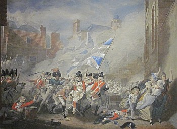
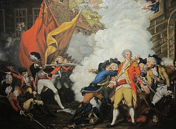

A Mousieu le Rédacteu de la "Cronique."
La Perruque, Janvi 10, 1881.
Mousieu, - Permettez-mé une petite pliache dans votre estimable Gazette pour que le public sache m'en opinion par rapport ès Fetes de Jeudi passait, au sujet de la Bataile de Jerri, et comme ou z'etes un jerriais de la vieille rachine et trejous prêt à rendre service a vous sembliaibles, j'en fais seux q'uonne allez pon me 'rude chu service la, enfin j'prends pour granted que j'sommes tout a fait d'accord sur l'sujet et je quemenche par vous dize que mon nom est Abreham, y n'est pas besoin de vous en dize pus long, tout le monde me connait bain et ont connu m'zanchetres pour etre des Jerriais de la vieille race et amins de leur pays - quement man grand pèze du bord de ma fam, q'uest mort il y a carante ans, etait à la Batail et s'y batit comme un brave, c'hetait un galiard qui n'avait pas de frès es tiers, dans chu temps la j'avez etout une couisine qui etait en service sis Capt. Viber, de Ste. Mazie, ou 'lavait seize ans et comme sans maitre etait Capten d'une Compagnie du Regimen du nordvoix etait à la Batail sa fam l'enviy a porté la q'lioque (cloak), de son maître, comme ou savait pon s'y jammais y r'evaindrait, creyous Mousieu que chetait la une jeune hardel qui avait du queu. Toute not famille a trejous été de meme des jens d'un divers queu. Quand ou vint au Vier Marchi la Batail etait finie; ou s'adrechi à un soudar, sacrebleu qui etait dans un terrible êta de sang et de poudre pour savé y'ou porter chu q'lioque quand y l'enviy jusqua La Roque où par bonheur ou trouvi Capt. Viber, san maitre, qui fu bain ébahi ou pouvez pensé d'la vez a La Rocque, toute seul, et dans un temps pazeil. Y la r'envit bain vite comme le tard venait dize s sa fam quil avaient gagni la Batail et quil etait (all rite).
Apres avait ete montrer à Nancy tout che qui l'y avait a vée par la Ville qui était magnifique, je nous entre dinmes que les chains qui avaient arrangi toutes chez belles arches et les couleurs avaient bain du goût. Nous v'la que j'arrivons auprès du Vier Marchi, ou les soudards atout lus brèt blianche comme de la nai, sont campez en fâche de not brave General et des gros bonets du pays, quand le Gouverneux fait un biaux discours apres qui tous cries des houras que nou z'entendait de la pompe de haut à la vielle Prison. Dans chu moment la, Nancy avait la lerme ès yiers, en pensant qu'oul etait sus la plièche ou il y a chent ans nous braves 's'anchetres avaient verse lus sang pour lus pays. Ne v'la ti pas le vaisin Nickless, rouge comme un co, qui vaint nous trouvé. Quement s'ly fis Nancy s'ly fis talle, où est vot fam? S'ly fis Nickless: Ou l'a resté a la maison soigni sa vaque. comme j'étions à admizé ches biaux soudards, comme se fis Nickless: Lus z'acoutremens, etc., ont sapristi bain changi depuis chent ans; a'cheteu il ont des chapeaux atout des saluettes devant et d'rièze, des brees a grand braguette et d'z'armes a ripetition. la le vaisin Abreham m'interrompi et m'dit, s'en tis ti: Tu t'trompe, chez à repetition. "My good" que tu es ergardant, s'ly fis Nickless, la diffezence entre ripeti et repeti n'est tréjous pas bain grande, quand Abreham un mio équaufé l'y dis: Tu ments, Nickless, un mio cohd etout et extremmement cours de pé, lis dis: Abreham, sinon que j'sommes vaisins et anmins, j'mettrais les grins a bord. Quement, s fis Nancy, buzard bachouard qu'ou zetes tous les deux, allous ave du brit pour s'y p'tite chose quand tout le monde est dans la joie, que je s'ai a ripete - repete - ou répétition c'hez bain tréjous d'z'armes. Nancy avait bain raison, et les r'mins d'accord. Comme se fis Nickless, il y a chent ans, s'y nos braves z'anchetres avaient ieu d'itel z'armes a la plieche de lus grands mousquets a pliaque, il ezaient cliergi le Vier Marchi dans demieuze. comme se fis Abreham, quement achoqre que tu es, cres tu quil allaient lus battre atout d'z'armes sens pliaque, sais tu pon que c'hetait d'z'armes a pierre quil avaient dans chu temps la, et bain, s'fis Nickless, les prechains changements qui fezont y d'evzaient mettre des braguettes es brees, d'vant et d'rieze, pour pouvé les mettre d'un bor comme de l'autre; quand ès chapiaux, y sont tréjous pus c'mode que les chains du temps passe, qui etez de la forme d'un caboté à pommes de terre.

N'vla les soudards qui s'écartent et les Messieurs pour allé à l'Eglise, et nous je nous enfumes s'y Brett prendre chacun un bouan stiffer de Brandy-B'o, sans limon, epis Nancy qui était verte comme un chour avait etout besoin de quique petite chose, j'eumes bain de la paine a nous y coulé, la maison etait pliaine comme l'eu. Après que Nickless eut bu sans stiffer, i q'mmenchi a bailli d'sa goule, et a joué des bras, et montre comme il té vailliant, mais I se trouvi là un galliard qui avait un air grincheux qui le 'rmins betot dans s'nécale en l'vyant s'y vailliant. Y l'y dis, s'ly fis ti, je cré bain s'y faillait erpousé un enmin que ou z'etes bain aussi vaillant comme Jean Perrin de qui Mousieu Perrot fait mention dans s'nexcellent Almanah de c'ht'annee, comme y s'trouvait à unne assize de veille s'y la vier Raulin de l'Ecluse, à la Trinité, quand un normand vint dans le mitan de la nié, tappé à la parte et faize du train, not vailliant Jean Perrin fut bain vite se muchi dans la conièze sous un lopin d'fagots, dans chu temps là les Normands avez la manqui de notre ile. A chu moment la, Nickless vint blianc comme une chiquette et tremlai dans ses bree, quand Abreham l'y conseilli s l'ourelle: Nickless, sauvons-nous, s'y tu veux n'avait pon le nez torchi et ainchin j'finmes et nous en fummes auprès l'Eglise pour vée l'z'états entré, j'etions un p'tit mio tard, il y avait une masse de pieuple et a forche d'pouse, j'nous trouvai baintot sis Mess Coutanche ou est not van, mais c'hettait une pous'siz genezale, tous pou'saient, en devant comme en d'rieze, les fames es pièze de tous, je t'asseuze, man vaisin Nickless me trouvant de même poussé par des fam devant et drièze que j'en trouvi bain drole, Nickless qui etait un p'tit pus lien me dis que j'avez bain des fais changi de couleur, une fais dehalez, je nous mînmes en route pour trouve Nancy qui était bain enniais de nous attendre. Apres avait prîns quique petite chose, j'allimes et nous mimes en route, j'naretimes pas es fire-work, car Nickless etait gené pour sa fam et sa vaque, épis il etait etout jentiment bain grée, nous v'la arrivee, Elizabet fut bain aize de nous r'vais, et comme nous etait dans la joie, sa vaque avait ieu une belle geniche; ou tait s'y contente q'uo s'nalait la faize mettre sur le Hard-Book; Nickless la nommé Ballyhal, une piieche en N'ierlande, d'ou vain tout le beurre sale (dirty). Apres avait prins un parting, je nous minmes en route, et laissinmes Nickless plein comme eune futaille.
En vous disant Adios,
Je sis,
Un Jersiais de la Vielle Race
Viyiz étout: